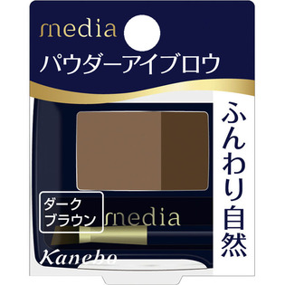
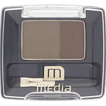

返回列表
产品名称：メディア パウダーアイブロウａ DB-1 ダークブラウン

カネボウ化粧品 メディア パウダーアイブロウａ DB-1 ダークブラウン ＤＢ１
メーカー カネボウ化粧品
JANコード 4973167131312
商品の特徴
ふんわり自然な眉が描ける、パウダータイプのアイブロウです。
成分・分量
タルク、カオリン、ヒドロキシステアリン酸オクチル、フェニルトリメチコン、ステアロイルグルタミン酸アルミニウム、水溶性コラーゲン、ジメチコン、ミリスチン酸亜鉛、デヒドロ酢酸塩、パラベン、［＋／－］グンジョウ、酸化鉄、マイカ
用法及び用量
【使用方法】
ブラシにパウダーを適量とり、手の甲などで調節しながらご使用ください。